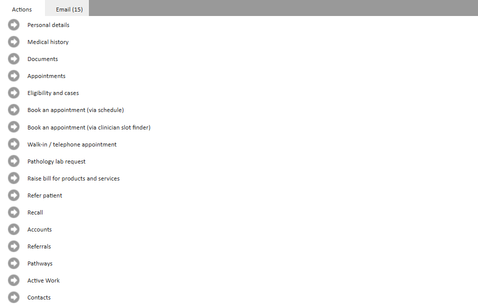

The Patient Record Page is a central hub for managing and interacting with patients and their medical record.
The purpose of this article is to explain the available actions on the Patient Record Page.
The Patient Record Page contains essential demographic information and several tools to manage patient-related tasks. Key sections of this page include:
This will mark the record as deleted and can be restored. Please see Deleting, Restoring, and Wiping a Patient for more information.
The ‘Actions’ Pane – A pane providing quick access to essential tools. Scroll to see all available actions. From the ‘Actions’ Pane, users can do the following:

View or Edit patient demographic details such as name, contact details, default payer type. To learn more about patient's Personal Details, please see How to add a patient.
View the medical history for the patient. To learn more about working with the medical history, please see Working with the Medical History.
View, create or modify patient documents. To learn more about the documents page, please see The Documents Page.
View and access historical or booked appointments. To learn more about the appointments page, please see Understanding the Appointments page on a patient record.
View or create new cases and eligibility. To learn more about the Eligibility and Cases page, please see Patient Eligibility and Cases.
Book an appointment for the patient using:
Raise a pathology lab request (outside the context of an appointment). To learn more about raising pathology lab requests, please see How to request and manage Pathology Results.
Raise a bill for the patient for products or services outside the context of an appointment. To learn more abut raising bills for products and services, please see Raise a bill for Products and Services.
Start the referral process for a patient.
This can be used to create external referrals to 3rd parties, create an internal referral or create a Occupational Health referral if the setting is enabled.
To learn more about sending external referrals, please see Outbound Referrals to External Providers.
To lean more about creating internal referrals, please see Set up and Managing Incoming Referrals.
To learn more about occupational health referrals, please see Case Management: Referral creation - Occupational Health.
Create a recall for the patient. To learn more about recalls in Meddbase, please see Recalls.
View accounts for the patient. To learn more about the accounts page, please see Understanding the Accounts page - An overview
View referrals that have been made for the patient, both incoming and outgoing referrals.
Incoming referrals is the default view.
View or start pathways for the patient. To learn more about pathways, please see Understanding Pathways.
View all active work items associated with the patient.
Create or view contacts for the patient.